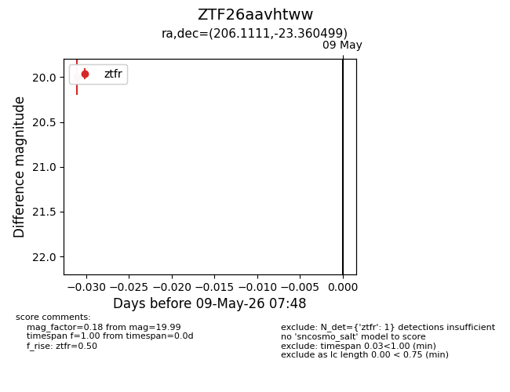
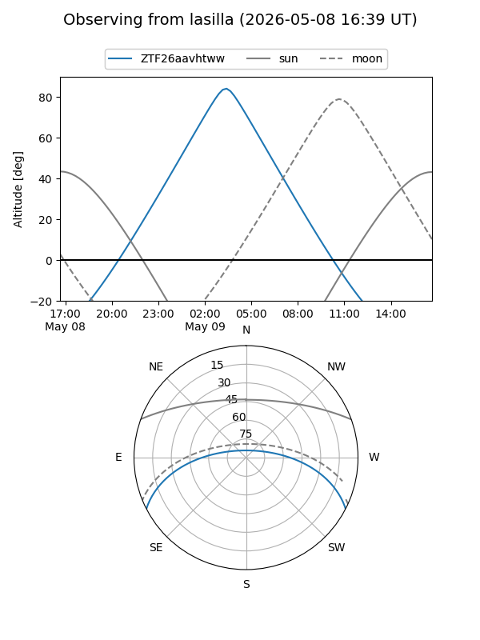
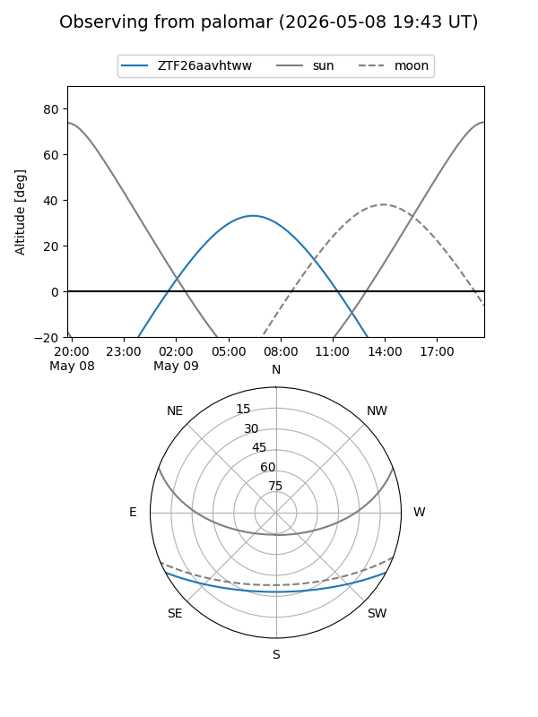

ZTF26aavhtww
Target ZTF26aavhtww at 2026-05-09 07:49
Aliases and brokers:
FINK: link
Lasair: link
ALeRCE: link
alt names
ZTF26aavhtww (ztf,fink_ztf)
Coordinates:
equatorial (ra, dec) = 206.1111,-23.36050
equatorial (HMS+DMS) = 13:44:26.66,-23:21:37.80
galactic (l, b) = (318.4020,+37.91374)
Flags:
Photometry:
last ztfr=19.99
1 ztfr detections
Lightcurve

Visibility


Additional plots